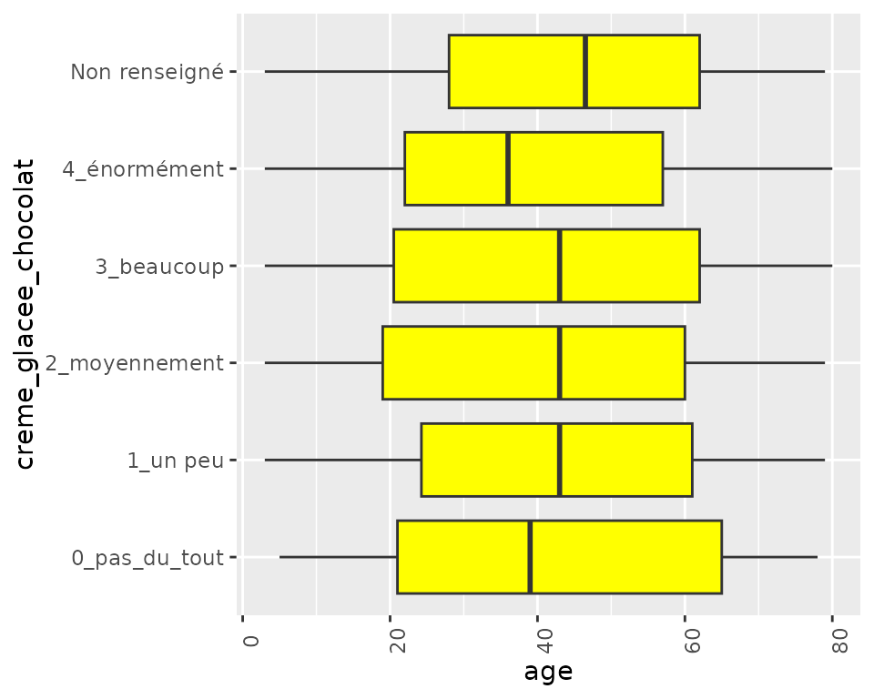

Exploring the link between two variables
Exploring_the_link_between_two_variables.Rmd
library(dplyr)
library(questionable)
library(randomForest)
data(icecream)Plotting the relationship between two variables
When trying to explore the link between two variables X and Y, you
can use function biplot(). It adapts to the quantitative or
categorical nature of variables X and Y.
Two categorical variables
biplot(icecream,"creme_glacee_vanille","creme_glacee_chocolat")
test_pval(icecream,"creme_glacee_vanille","creme_glacee_chocolat")
#> [1] 0.1674097In this case, a chi-squared test is performed. The p-value is
calculated and displayed in the plot’s title. The p-value is also
accessible via the function test_pval().
One quantitative, one categorical variable
biplot(icecream,"age","creme_glacee_chocolat")
test_pval(icecream,"age","creme_glacee_chocolat")
#> [1] 0In this case, a ANOVA is performed.
Two quantitative variables
biplot(icecream,"age","taille")In the case of a non-linear regression (as displayed above) no test is carried out.
Running a linear regression (method=“lm” for Linear Model) allows a test to be performed.
biplot(icecream,"age","taille",method="lm")
#> [1] 3.921647e-107
test_pval(icecream,"age","taille")
#> [1] 3.921647e-107General overview of the p-values
For a general overview of all variables’ inter-relationships, you can
use the function pval_graph(). This function will calculate
the p-values for all pairs of variables in the dataset. The resulting
graph will display the p-values in a heatmap format, allowing for easy
identification of significant relationships.
data(icecream)
pval_graph(icecream %>% dplyr::select(-comment,-id), var_reorder=TRUE)